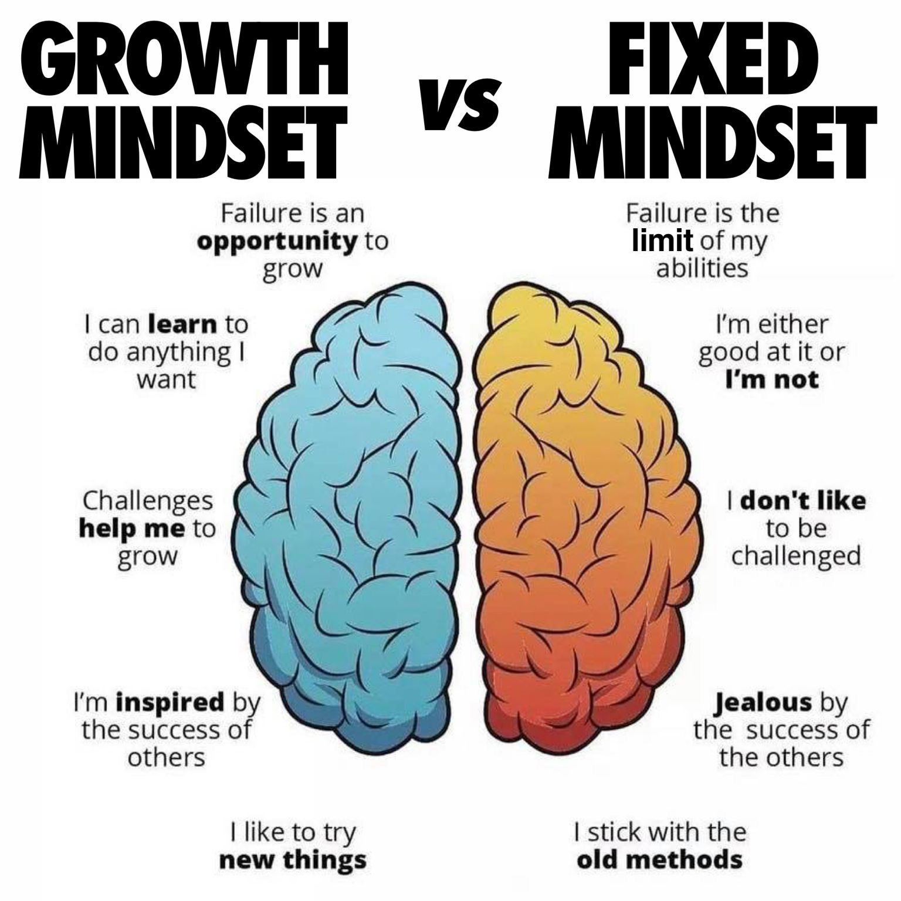

When someone has a growth mindset it means they veiw their knowledge and skills as capable of growth and improvement. This is relevent in this course and industry because it promotes a few qualities and skills like problem-solving, resilience, adaptability, teamwork and more.

I will integrate a growth mindset into my learning by...
A blog from Harvard's online business school about the difference between growth and fixed mindsets (related to entrepreneurship).
https://online.hbs.edu/blog/post/growth-mindset-vs-fixed-mindset